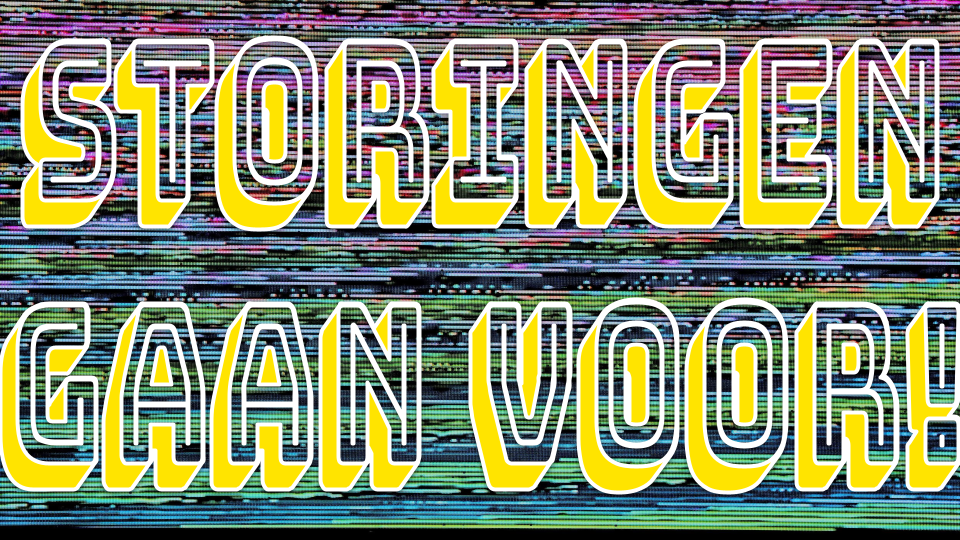
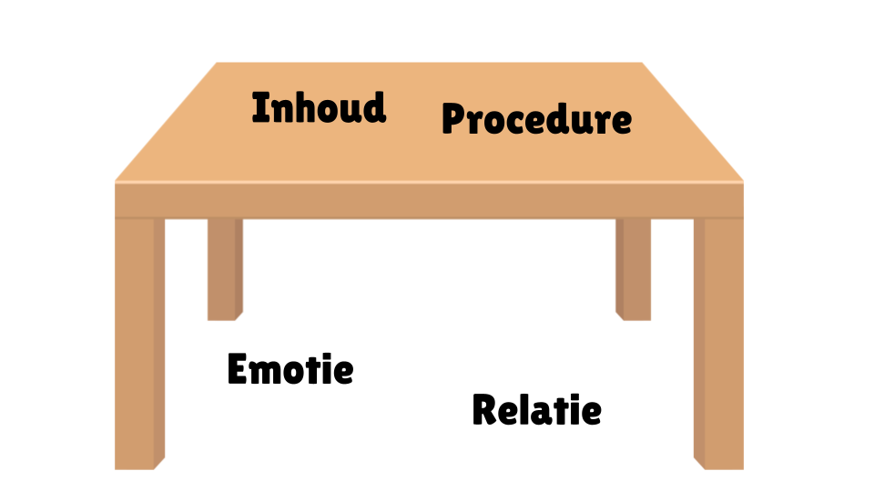
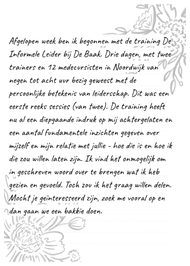
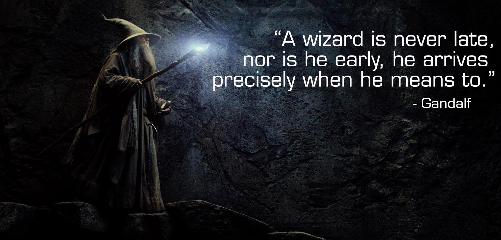

Training De Informele Leider
Eerste inzichten

Leiderschap gaat over:
Visie
Grenzen
Belangen
Verlangens
Behoeftes
Mijn leerpunten hebben te maken met het kunnen verwoorden van mijn grenzen (voor mezelf en naar anderen) en de kern en bron ontdekken van mijn verlangens en behoeftes.
Verlangen
Ik wil spelen
Zoals toen ik kind was
Met anderen
Zo leren, proberen
In verbinding zijn
Niemand kwijtraken
We letten op elkaar
En passen het spel aan
Zodat iedereen mee kan doen
We zijn trots op hoe we spelen
En samen creëren
Wat zou ik kunnen doen om daadwerkelijk te gaan spelen?
Wat zou een kleine stap zijn die ik 1x per dag zou kunnen doen?
Wat zou een grotere stap zijn die ik 1x per week zou kunnen doen?
Wat zou een groot experiment zijn?
Welke beloning geef ik mezelf voor het doen van de stap?
Inspiratie
Leuke oefeningen
Wat kan je over een onbekende vertellen?
Omgekeerde stoelendans; de koning in zijn koninkrijk

Experimenten
Toen ik weer aan het werk ging, wilde ik heel graag met mijn collega’s delen wat ik tijdens de eerste trainingsessie’s allemaal heb beleefd. Ik heb daarom een uitnodiging naar iedereen geschreven.

Een aantal collega’s hebben op de uitnodiging gereageerd. Tijdens de gesprekken hebben we vooral gesproken over verlangens en behoeftes. Met sommigen kon ik dieper gaan en zelfs praten over wonden uit het verleden, moeilijke familiesystemen, etc. Wat ik merkte, was dat iedereen vergelijkbare verlangens en behoeftes had, maar deze om één of andere reden niet uitsprak in het team.
Een belangrijk instrument dat ik heb meegekregen uit de training was de vertraging. Op heel veel momenten, werd ik bewust dat ik mijn hoofd even uit moest zetten. Ik zat dan in stilte te kijken en te luisteren, zonder enige behoefte om ergens op te gaan acteren. Altijd kwam er dan op exact het juiste moment een inzicht of idee langs waarmee ik verder kon.
